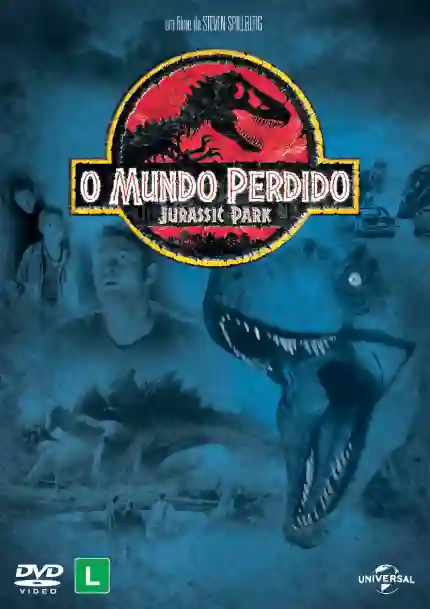

JURASSIC PARK 2

SINOPSE
- Quatro anos após os eventos de Jurassic Park, uma expedição é organizada para estudar os dinossauros que vivem livremente em uma ilha remota. Contudo, a situação se complica quando os humanos tentam capturar os dinossauros para levá-los para o mundo civilizado, o que resulta em uma luta pela sobrevivência e a preservação das criaturas.